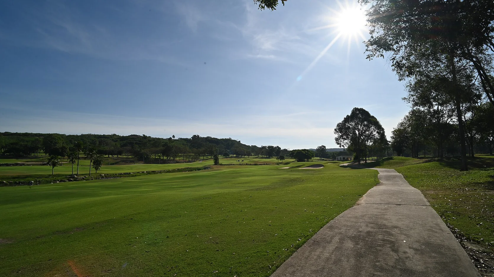

한국대중골프장협회 조사에 따르면 2026년 상반기 국내 골프장 내장객은 전년 동기 대비 약 10% 증가했습니다. 다만 2025년 상반기가 폭설과 잦은 비로 유난히 부진했던 기저효과가 크고, 2023년과 2024년 상반기에 비하면 여전히 낮은 수준입니다. 그린피 객단가는 전년과 비슷하거나 평균 5% 정도 내렸습니다. 사람은 조금 돌아왔지만 한 사람이 쓰는 돈은 줄었다는 뜻입니다. 시장이 회복 국면이라고 말하기엔 이릅니다.

핵심 데이터 한눈에
얼마나 늘었나보다, 어떻게 바뀌었나
매경GOLF가 카카오골프예약 상반기 데이터를 바탕으로 정리한 결산의 결론은 명확합니다. 수요의 크기가 아니라 선택 기준이 바뀌었다는 것입니다. 골퍼는 이제 시간, 가격, 인원 구성, 이동 거리, 숙박과 관광까지 한 번에 놓고 라운드를 고릅니다. 그 변화를 다섯 개 지표로 보면 이렇습니다.
다섯 지표는 하나의 이야기를 합니다. 골퍼는 더 유연하게, 더 작은 단위로, 더 늦게 결정하고, 더 오래 머무는 쪽으로 움직였습니다. 4인 한 팀이 새벽에 출발해 라운드만 하고 돌아오는 방식이 기본값이던 시대가 끝나고 있습니다.
지역이 바뀌었다, 제주에서 충남과 강원으로
지역별 예약 증가율에서도 같은 흐름이 확인됩니다. 오랫동안 골프여행의 대명사였던 제주는 상반기 10.9% 늘어난 데 그쳤습니다. 반면 충남은 41.9%, 강원은 41.1% 급증했습니다.
충남과 강원의 공통점은 수도권에서 차로 2시간 안에 닿고, 골프장 주변에 숙박 시설이 있다는 것입니다. 비행기를 타야 하는 제주는 같은 비용이면 일본이나 동남아와 경쟁해야 하는 처지가 됐습니다. 골프여행의 무게 중심이 먼 곳의 명문 코스에서 가까운 곳의 골프와 숙박 조합으로 옮겨 가고 있습니다.
이 변화가 골프장 운영에 요구하는 것
내장객이 늘었는데 객단가가 내렸다는 조합은 골프장에 두 가지를 요구합니다. 첫째, 가동률을 끌어올리는 방법이 바뀌어야 합니다. 4인 팀 단위로 티타임을 채우는 방식은 2~3인 예약과 임박 예약이 40%를 넘는 시장에서 빈 자리를 만듭니다. 조인, 2~3인 요금, 노캐디 옵션, 야간 3부를 어떻게 안정적으로 운영하느냐가 가동률과 만족도를 함께 결정합니다.
둘째, 골프장 밖에서 매출을 만들어야 합니다. 그린피는 내리는데 숙박 포함 골프여행은 36% 늘었습니다. 골퍼가 골프장에 쓰는 돈은 줄었지만 골프여행 전체에 쓰는 돈은 줄지 않았다는 뜻입니다. 그 차이를 가져가는 곳은 골프장 옆에 숙박과 식음, 다른 즐길 거리를 갖춘 사업장입니다. 충남과 강원이 급증한 이유이기도 합니다.
씨유레저가 보는 하반기
씨유레저 채수용 대표는 상반기 데이터가 회원모집 상품의 설계 방향을 그대로 가리킨다고 봅니다. 골퍼가 작은 단위로 늦게 결정하고 오래 머무는 쪽으로 움직였다면, 회원에게 주어야 할 것도 4인 팀 부킹권이 아니라 2~3인이 임박해서도 잡을 수 있는 예약, 그리고 라운드 앞뒤로 머물 수 있는 숙박입니다. 골프장과 콘도를 묶은 상품이 상반기 시장에서 반응이 좋았던 것은 이 변화와 정확히 맞아떨어졌기 때문이라는 것이 채 대표의 판단입니다.
하반기에 볼 지표도 정해져 있습니다. 내장객 총량이 아니라 2~3인 예약 비중, 숙박 결합 예약 비중, 그리고 충남과 강원 같은 근거리 체류형 지역의 증가율입니다. 이 세 숫자가 계속 오른다면 골프장 단독 회원권보다 숙박 결합형 상품의 우위는 더 분명해집니다.
채수용 대표는 내장객 10% 증가라는 숫자에 안도할 골프장은 없어야 한다고 봅니다. 기저효과를 빼면 시장은 여전히 2023년보다 작고, 객단가는 내렸습니다. 대신 골퍼가 시간과 인원과 숙박을 조합해 라운드를 설계하기 시작했다는 점을 기회로 읽어야 하며, 그 조합을 상품으로 먼저 만들어 내는 사업장이 하반기와 내년의 승자가 된다는 것이 씨유레저의 판단입니다.
채수용, ㈜씨유레저 대표이사상반기의 진짜 뉴스는 내장객이 돌아왔다는 것이 아니라, 돌아온 골퍼가 예전과 다른 방식으로 치고 있다는 것입니다. 그 방식에 맞는 상품을 가진 곳만 회복을 실감하게 될 것입니다.
숙박 결합형 골프 회원모집 상품의 설계를 검토 중이시라면 (주)씨유레저로 문의 가능합니다.